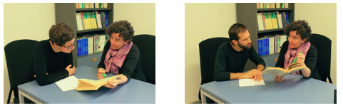

COGNITIVE TASK
ODD ONE OUT (COGONEOUTLSE)
This is the only not-linguistic task. It has the purpose to evaluate general cognitive abilities of the
participants. The task is to find the intruder in a set of 4 pictures (e.g. a cow among three horses).
Two training items and 28 target items compose the task.
Execution time is about 5 minutes.
As an example, we report here the training items.

LEXICAL TASKS
LEXICAL COMPREHENSION WITH PHONOLOGICAL DISTRACTORS TASK IN LSE (LEXCOMPHONLSE)
The purpose of this task is to evaluate lexical comprehension where the target and the distractors are
phonologically related signs. Participants are required to identify which picture out of six corresponds to the
target sign. The non-target pictures are phonological competitors, namely they represent signs that are
phonologically close to the target sign.
One training item and 25 target items compose the task.
Execution time is about 7 minutes.
As an example, we report here the training item (the sign is PEAR):
LEXICAL COMPREHENSION WITH SEMANTIC DISTRACTORS TASK IN LSE (LEXCOMSEMLSE)
The purpose of this task is to evaluate lexical comprehension where the target and the distractors are
semantically related signs. Participants are required to identify which picture out of eight corresponds to the
target sign. The non-target pictures are semantic competitors, representing concepts that are semantically
related to the target sign.
Two training items and 18 target items compose the task.
Execution time is about 5 minutes.
As an example, we report here one training item (the sign is PRINTER):
OPPOSITES LEXICAL TASK IN LSE (LEXOPPLSE)
This is a comprehension and production task that evaluates lexical competence. Participants are required to
watch a sign and produce a sign with the opposite meaning. Target pairs are nouns, verbs, adjectives and
adverbs.
Three training pairs and 30 target pairs compose the task.
Execution time is about 10 minutes.
As an example, we report here one training pair (the given sign is GO OUT and the expected answer GO IN):
PICTURE NAMING TASK IN LSE (LEXNAMLSE)
This task evaluates lexical production. Participants are required to name a number of pictures typically
representing objects. The expected answers are nouns.
Two training and 77 target pictures compose the task.
Execution time is about 15 minutes.
As an example, we show here a training picture and the expected answer (BOOTS):
SYNTACTYCT TASKS
CONTENT QUESTIONS COMPREHENSION TASK IN LSE (SYNTCQLSE)
This is a sentence-to-picture matching task aiming at assessing the ability to comprehend content questions
(also called wh-questions). The interrogative pronoun is either the subject or the object.
The pictures represent three characters in a row (first and third alike, second different) with the first
character performing an action on the second, and the second character performing the same action on the third
(as in Friedmann, Belletti & Rizzi 2009).
The task is to touch or chick on the character who represents the answer to the question.
40 target questions and 12 filler questions compose the task. The items are divided in 2 lists (26 items each)
and each list is administered in a different block. For each block there are 2 training items.
Execution time is about 20 minutes in total for the two blocks.
As an example, we report here one training item:
Which content question on the object: MAN jPUSHk CHILDk WHICH?

RELATIVE CLAUSES COMPREHENSION TASK IN LSE (SYNTRELLSE)
Participants are required to watch a video with a request embedding a relative clause (’Point to the dog that is
chasing the cat/’Point to the cat that the dog is chasing’) and need to answer touching or clicking on the
correct character in a picture. The pictures represent three characters in a row (first and third alike, second
different) with the first character performing an action on the second, and the second character performing the
same action on the third (as in Friedmann, Belletti & Rizzi 2009).
40 target requests with a relative clause and 10 filler request compose the task. The items are divided in 2
lists (25 items each) and each list is administered in a different block. For each block there are 2 training
items.
Execution time is about 20 minutes in total for the two blocks.
As an example, we report here one training item:
Subject relative clause: OLD-MANl CHILDk kWATER-POURj SAME
IX2 CLICK
VERBAL AGREEMENT COMPREHENSION TASK IN LSE (SYNTVALSE)
This is a true or false task assessing the comprehension of agreement verbs, namely verbs that are spatially
modified to mark their arguments (for example, they can involve a path movement from the position in space
associated to the subject from the position in space associated to the object).
Participants watch a not-linguistic video of a situation where three people interact. After the video, a
sentence in LIS is shown and this can correctly report about the not-linguistic situation or incorrectly report
the situation because of changes in verbal agreement (for example, in the non-linguistic video person 1 gives
something to person 2 but the LIS sentence reports the situation as if Person 2 gives something to person 1).
Participants’ task is to decide if the sentence matches the situation or not.
The task is composed of 18 agreements verbs that occurs 4 times each (in a correct sentence, in two sentences
with an agreement error and in a filler sentence). The total number of items is 72. They are divided in 2 lists
(36 items each) distributed in 2 blocks. Each block is preceded by two training items.
Execution time is about 20 minutes in total for the two blocks.
As an example, we report here one training item:
IX1 1PICK-UP2
“I picked you up.”
ROLE-SHIFT COMPREHENSION TASK IN LSE (SYNTRSLSE)
This is a sentence-to picture matching task evaluating the ability to detect role shift and compute the related
change in in interpretation. Role-shift is a strategy to report actions, utterances or thoughts of another
character by adopting the perspective of the character rather than the perspective of the signer (often the
signer signals the change of perspective by moving his/her body towards the position associated with the person
whose perspective is being adopted).
Participants watch a video sentence that can be with or without role-shift. Their task is to decide which
picture out of two represents the sentence. The two pictures are very similar and depict the interpretation with
and without role-shift.
The task is composed of 40 items with role-shift and 40 without role-shift, plus 16 fillers to assess whether
participants comply with the task requirements.
The task is administered in 2 blocks. For each block, there are 2 training items.
Execution time is about 20 minutes in total for the two blocks.
As an example, we report here one training item:
Sentence with role shift:
HAPPEN EXAM IMPORTANT. FRIEND MARIA SAY [RS TEACHER 3-HELP-1].
“There will be an important exam. My friend Mary told me “the teacher will help me”.
